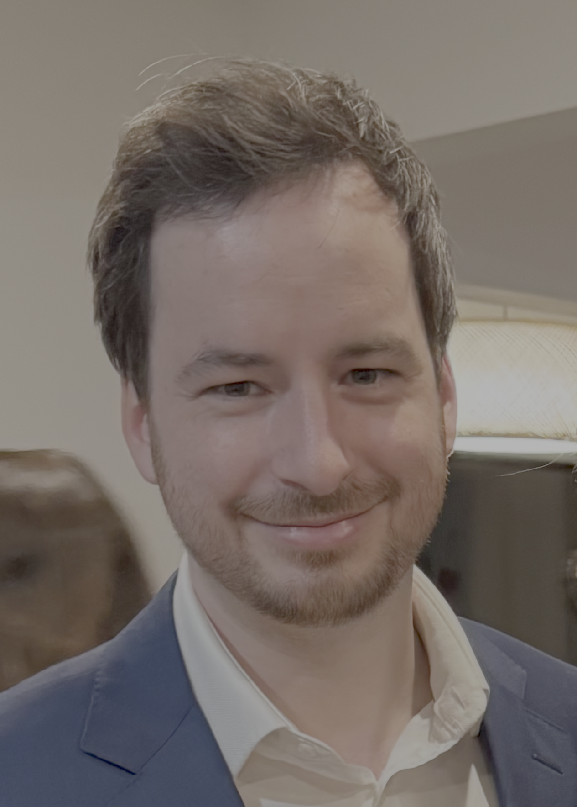

Marc Aurèle Gilles
Assistant Professor · Department of Mathematics
Princeton University
I work in applied mathematics, with a focus on numerical linear algebra. My research spans numerical analysis, computational imaging, and applied statistics, with applications to microscopy, radar sensing, path planning, and augmented reality.
My recent work develops algorithms for cryogenic electron microscopy (cryo-EM). I built and maintain RECOVAR, a software tool for reconstructing flexible proteins from large and noisy cryo-EM datasets.
gilles [at] princeton.edu · Fine Hall 212, Princeton University
News
-
July 2026
Cryo-EM workshop at ICCP 2026 Summer School
I am helping Ellen Zhong's lab put together a cryo-EM reconstruction workshop for the ICCP 2026 Summer School. Materials are available in the tutorial repository, including an introductory homogeneous reconstruction notebook.
-
June 2026
Computational problems from 3DEM GRC
Eric Verbeke and I attended a cryo-EM Gordon Research Conference and wrote a short note advertising some computational problems we found there.
Research
My research is mostly on one of two things:
Cryogenic electron microscopy (cryo-EM). Cryo-EM produces millions of noisy 2D projections of a molecule in random unknown orientations. I develop algorithms to reconstruct the 3D conformational heterogeneity of flexible proteins from such data. See [RECOVAR, PNAS, 2025].
Numerical linear algebra. Fast algorithms for linear algebra tasks such as low-rank approximation and matrix factorization, particularly via randomized methods. See [RPLU, arXiv, 2026].
I am always happy to learn about other mathematics or applications, feel free to reach out!
Teaching
- Spring 2026 Mathematics junior seminar: "Approximation Theory and Approximation Practice"
- Fall 2025 MAT 321: Numerical Analysis and Scientific Computing
- Spring 2025 MAT 204: Advanced Linear Algebra with Applications
- Fall 2024 MAT 321: Numerical Analysis and Scientific Computing
- Fall 2024 Mathematics junior seminar: "The top 10 algorithms of the 20th century"
- Spring 2023 MAT 321: Numerical Methods